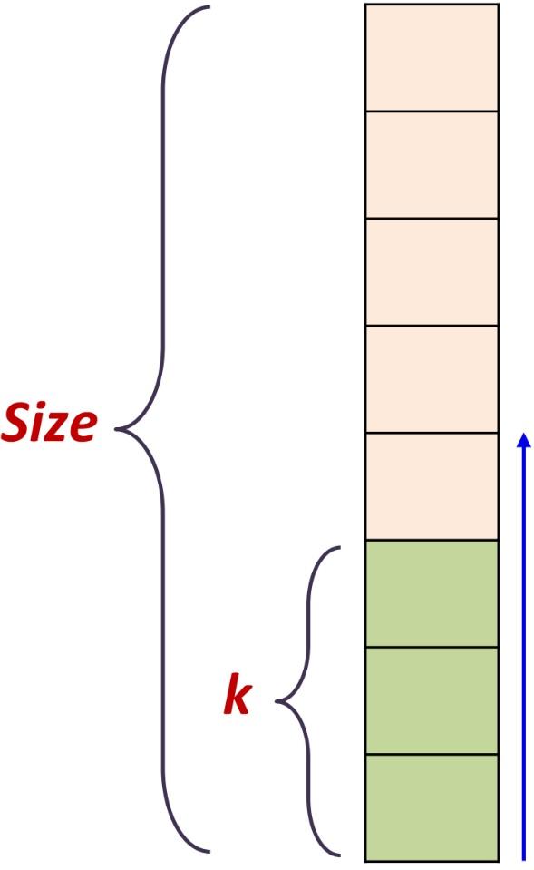

def selection_sort(v):
n = len(v)
for i in range(n - 1):
min = i
for j in range(i + 1, n):
if v[j] < v[min]:
min = j
if min != i:
v[i], v[min] = v[min], v[i]
def selection_sort(v):
n = len(v) # 1 операция
for i in range(n - 1):
min = i # 1 операция
for j in range(i + 1, n):
if v[j] < v[min]: # 2 операции
min = j
if min != i: # 4 операции
v[i], v[min] = v[min], v[i]
$T(n) = 1 + \ldots$
$T(n) = 1 + (n-1) + \ldots$
$T(n) = 1 + (n-1) + 4(n-1) + \ldots$
\[T(n) = 1 + (n-1) + 4(n-1) + \\ 2((n-1) + (n-2) + \ldots + 1)\]
$T(n) = 4n - 4 + 2((n-1+1)(n-1)/2)$
$T(n) = 4n - 4 + n^2 -n$
$T(n) = n^2 -4n-4$
$T(n) = O(n^2)$
| Разряд | 4 | 3 | 2 | 1 | 0 |
| Вес | 16 | 8 | 4 | 2 | 1 |
| Значение | 0 | 0 | 0 | 0 | 0 |
def inc(A):
i = 0
while i < L and A[i]==1:
A[i] = 0
i = i + 1
if i < L:
A[i] = 1
Заменяем начальную последовательность единиц нулями (перенос в старший разряд)
При каждом вызове функции Increment время ее работы разное и
зависит от внутреннего состояния – значений A[1..L]
Вычислительная сложность функции Increment?
В худшем случае массив A[1..L] состоит только из единиц,
для выполнения операции Increment требуется время O(L)
Это пессимистическая оценка!
Амортизационный анализ (amortized analysis) — метод анализа алгоритмов, позволяющий осуществлять оценку времени выполнения последовательности из $n$ операций над некоторой структурой данных
Время выполнения усредняется по всем $n$ операциям, и оценивается среднее время выполнения одной операции в худшем случае
Некоторые операции структуры данных могут иметь высокую вычислительную сложность, другие низкую
Например, некоторая операция может подготавливать структуру данных для быстрого выполнения других операций
Такие «тяжелые» операции выполняются редко и могут оказывать незначительное влияние на суммарное время выполнения последовательности из $n$ операций
Амортизационный анализ возник из группового анализа (aggregate analysis)
Введен в практику Робертом Тарьяном (Robert Tarjan) в 1985 году:
Tarjan R. Amortized Computational Complexity // SIAM. J. on Algebraic and Discrete Methods, 6(2), 1985. – P. 306–318.
Все методы позволяют получить одну и ту же оценку, но разными способами
Групповой анализ (aggregate analysis) — метод амортизационного анализа, позволяющий оценивать верхнюю границу времени $T(n)$ выполнения последовательности из $n$ операций в худшем случае
Амортизированная стоимость (amortized cost, учетная стоимость) выполнения одной операции определяется как \[T(n)/n\]
Амортизированная стоимость операции – это оценка сверху среднего времени выполнения операции в худшем случае
Всего 0 операций, общая сложность 0, средняя —.
| ↓Top | |||||||
def MultiPop(S, k):
while not stack_empty(S) and k > 0:
stack_pop(S)
k = k – 1
$T_{MultiPop} = O(\min(|S|, k))$
Методом группового анализа оценим верхнюю границу времени $T(n)$ выполнения произвольной последовательности из $n$ стековых операций (Push, Pop, MultiPop)
В худшем случае последовательность из $n$ операций может содержать только операции MultiPop
Тогда, суммарное время $T(n)$ выполнения $n$ операций есть $O(n^2)$, а амортизированная стоимость одной операции
\[O(n^2)/n=O(n)\]Количество операций Pop (включая вызовы из MultiPop) не превышает количества операций Push. В свою очередь, число операций Push не превышает $n$ (операция MultiPop реализована на базе Pop)
Таким образом для выполнения произвольной последовательности из $n$ операций Push, Pop, MultiPop требуется время $O(n)$
Суммарное время выполнения $n$ операций в худшем случае есть $O(n)$, тогда амортизированная стоимость (средняя стоимость) одной операции над стеком есть
\[O(n)/n=O(1)\]Останется ли справедливой оценка амортизированной стоимости стековых операций, равная $О(1)$, если включить в множество стековых операций операцию MultiPush(S, k), помещающую в стек $k$ элементов?
Нет
В последовательности из $n$ стековых операций может быть $n$ операций MultiPush, что требует времени $O(nk)$
Тогда амортизированная стоимость (средняя стоимость) одной стековой операции
\[T(n)/n = O(nk)/n = O(k)\]| N | A[7] | .. | A[4] | A[3] | A[2] | A[1] | A[0] | S | $\Sigma$ |
Можно заметить, что
время выполнения $n$ операций
\[2n\geq T(n)\]Средняя (амортизированная) стоимость одной операции Increment
\[O(n)/n = O(1)\]
def add_to_buffer(value):
buffer[count] = value
count = count + 1
if count == M:
for i in range(M):
packet[i] = buffer[i]
count = 0
Обозначим через $c_i$ количество операции, выполняемых
на $i$-ом вызове add_to_buffer
Тогда оценка сверху времени $T(n)$ выполнения $n$ операций add_to_buffer есть
Оценка сверху времени $T(n)$ выполнения $n$ операций add_to_buffer
Амортизированная стоимость одной операции add_to_buffer
Динамическая таблица (Dynamic table, dynamic array, growable array) – это массив поддерживающий вставку и удаление элементов и динамически изменяющий свой размер до необходимого значения
Поддерживаемые операции:
При выполнении операции Insert размер массива увеличивается
Как увеличивать размер массива?
Аддитивная схема – текущий размер массива увеличивается на $k$ ячеек (по арифметической прогрессии)
Мультипликативная схема – текущий размер массива увеличивается в $k$ раз (по геометрической прогрессии)
Примеры реализации:
|
 |
def insert(x):
if Size == 0:
Size = 1
Table = AllocateMemory(Size)
k = 0
else if k == Size:
Size = Size * 2
NewTable = AllocateMemory(Size)
for i in range(k):
NewTable[i] = Table[i]
FreeMemory(Table)
Table = NewTable
Table[k] = x
k = k + 1
Проведем амортизационный анализ времени $T(n)$ выполнения последовательности из $n$ операций Insert
Обозначим через $c_i$ количество операции, выполняемых на $i$-ом вызове Insert
\[c_i=\begin{cases} i & \quad если \ i-1 \ степень \ 2, \\ 1 & \quad иначе. \end{cases} \]Тогда оценка сверху времени $T(n)$ выполнения $n$ операций Insert есть
\[T(n) = c_1 + c_2 + \cdots + c_n \leq \\n + 2^0 + 2^1 + 2^2 + \cdots + 2^{\lfloor\log_2 n\rfloor} \] \[T(n) < n + 2n = 3n\]Оценка сверху амортизированной сложности одной операции Insert есть
\[T_{Insert} = \frac{T(n)}{n} = \frac{3n}{n} = 3 = O(1)\]Групповой анализ хорошо работает, когда мы впрямую можем оценить сколько будет "стоить" набор операций.
Также есть проблемы, если используется много операций.
Развитием является метод бухгалтерского учета
За каждую операция мы "платим" фиксированную стоимость.
Если в действительности "тратим" меньше, то остаток идет на наш "баланс".
Если больше, то сумма снимается с баланса.
Баланс не может становиться отрицательным.
Какую стоимость платить?
| i | op | result | charge | $C_i$ | $\Delta B$ | $B$ | ||
| 0 | append(6) |
|
1 | 2 | -1 | -1 |
| i | op | result | charge | $C_i$ | $\Delta B$ | $B$ | ||||
| 0 | append(6) |
|
2 | 2 | - | 0 | ||||
| 1 | append(2) |
|
2 | 3 | -1 | -1 |
| i | op | result | charge | $C_i$ | $\Delta B$ | $B$ | ||||||||||||||||
| 0 | append(6) |
|
3 | 2 | +1 | 1 | ||||||||||||||||
| 1 | append(2) |
|
3 | 2 | - | 1 | ||||||||||||||||
| 2 | append(8) |
|
3 | 1 | +2 | 3 | ||||||||||||||||
| 3 | append(1) |
|
3 | 5 | -2 | 1 | ||||||||||||||||
| 4 | append(3) |
|
3 | 1 | +2 | 3 | ||||||||||||||||
| 5 | append(4) |
|
3 | 1 | +2 | 5 | ||||||||||||||||
| 6 | append(7) |
|
3 | 1 | +2 | 7 | ||||||||||||||||
| 7 | append(2) |
|
3 | 9 | -6 | 1 | ||||||||||||||||
| ... | ... | ... | ... | ... | ... | ... | ||||||||||||||||
| ... | ... | ... | ... | ... | ... | ... | ||||||||||||||||
| ... | ... | ... | ... | ... | ... | ... |
Функция $\Phi$ — "потенциальная энергия", накопленной структурой данных за счет "дешевых" операций.
Её значения не отрицательны.
Пусть $o$ — некоторая отдельная операция из серии, $S_{before}$ — состояние структуры до этой операции, а $S_{after}$ — после неё. Тогда амортизированная сложность операции $o$ равна \[ T_{amortized}(o)=T_{actual}(o)+\Phi(S_{after})-\Phi(S_{before}) \]
Пусть у нас есть $n$ операций $O = o_1, o_2, \ldots, o_n$.
\[T_{amortized}(O) = \sum_{i=0}^{n} T_{amortized}(o_i)\] \[T_{actual}(O) = \sum_{i=0}^{n} T_{actual}(o_i)\]Выберем в качестве $\Phi(S_i) = k$ — число элементов в стеке.
Оценим $T_{amortized}(o)=T_{actual}(o)+\Phi(S_{after})-\Phi(S_{before})$
Для операции push $T_{amortized} = 1 + k + 1 - k = 2$
Для операции pop $T_{amortized} = 1 + k - 1 - k = 0$
Для операции multi_pop $T_{amortized} = 0$
| i | op | result | $C_i$ | $\Phi(S)$ | ||||||||||||||||
| 0 | append(6) |
|
1 | ? | ||||||||||||||||
| 1 | append(2) |
|
2 | ? | ||||||||||||||||
| 2 | append(8) |
|
3 | ? | ||||||||||||||||
| 3 | append(1) |
|
1 | ? | ||||||||||||||||
| 4 | append(3) |
|
5 | ? | ||||||||||||||||
| 5 | append(4) |
|
1 | ? | ||||||||||||||||
| 6 | append(7) |
|
1 | ? | ||||||||||||||||
| 7 | append(2) |
|
1 | ? | ||||||||||||||||
| 8 | append(5) |
|
9 | ? | ||||||||||||||||
| ... | ... | ... | ... | ... |
$\Phi(S_0)=0$ и $\Phi(S_i)=2*k-\textrm{Size}$
| i | op | result | $C_i$ | $\Phi(S_i)$ | ||||||||||||||||
| 0 | append(6) |
|
1 | 1 | ||||||||||||||||
| 1 | append(2) |
|
2 | 2 | ||||||||||||||||
| 2 | append(8) |
|
3 | 2 | ||||||||||||||||
| 3 | append(1) |
|
1 | 4 | ||||||||||||||||
| 4 | append(3) |
|
5 | 2 | ||||||||||||||||
| 5 | append(4) |
|
1 | 4 | ||||||||||||||||
| 6 | append(7) |
|
1 | 6 | ||||||||||||||||
| 7 | append(2) |
|
1 | 8 | ||||||||||||||||
| 8 | append(5) |
|
9 | 2 | ||||||||||||||||
| ... | ... | ... | ... | ... |
Два варианта:
Какую выбрать $\Phi(S)$?
Пусть $\Phi(S) = R(S)$ — число единиц (вес Хэмминга)